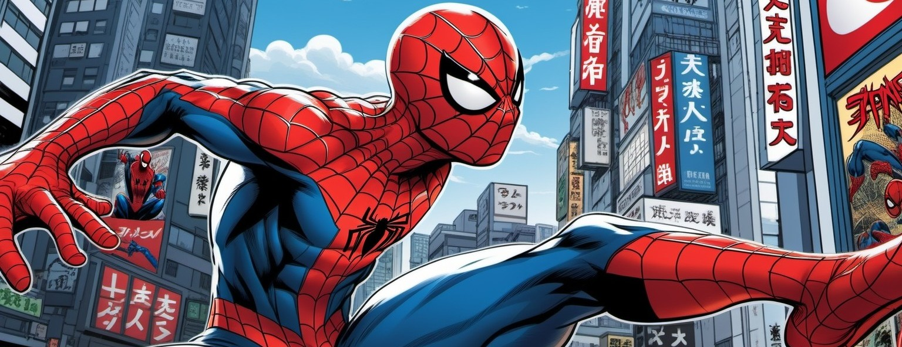

¿Quien es Spiderman?
Spiderman, también conocido como El Hombre Araña, es uno de los superhéroes más icónicos del universo de los cómics, creado por Stan Lee y Steve Ditko para Marvel Comics en 1962. Su historia comienza con Peter Parker, un joven tímido y brillante estudiante de ciencias que, tras ser mordido por una araña radiactiva, adquiere habilidades sorprendentes como la capacidad de trepar paredes, un sentido arácnido que lo alerta del peligro, y una fuerza sobrehumana.
Más que sus poderes, lo que define a Spiderman es su humanidad. Desde los momentos más oscuros hasta sus victorias más heroicas, Peter enfrenta problemas cotidianos como cualquier persona: pagar las cuentas, mantener sus relaciones y superar la pérdida de seres queridos. Todo ello mientras carga con una de las frases más célebres que le legó su tío Ben: "Un gran poder conlleva una gran responsabilidad".
Vestido con su característico traje rojo y azul (aunque a veces cambia de diseño), Spiderman se convierte en el protector de Nueva York, enfrentándose a una amplia galería de villanos como el Duende Verde, Doctor Octopus, Venom y el Buitre, mientras lucha por mantener el equilibrio entre su vida como héroe y como persona común.
Spiderman no solo es un superhéroe; es un símbolo de perseverancia, valentía y empatía, enseñando que cualquiera puede convertirse en un héroe, sin importar su origen o situación.
